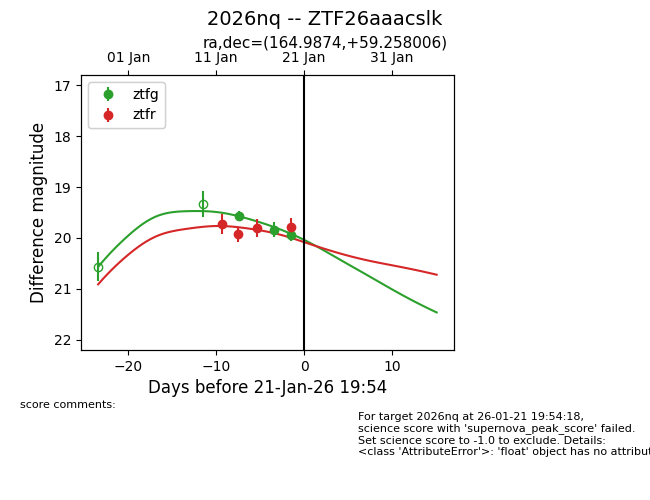
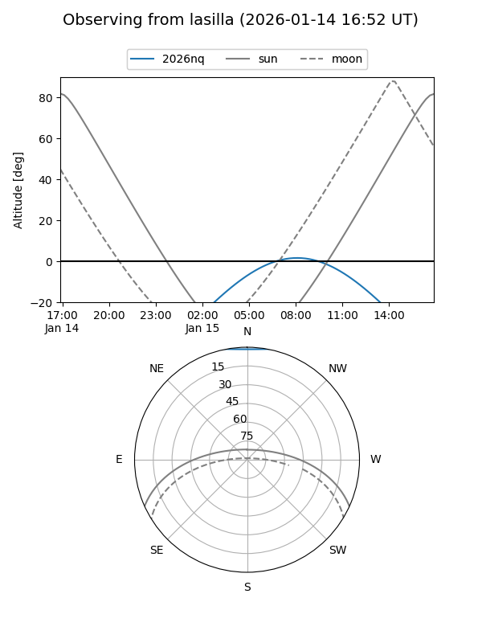
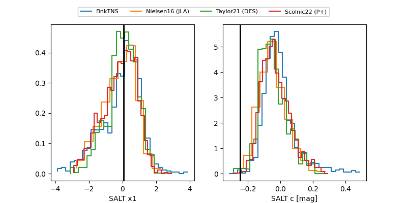

2026nq
Target 2026nq at 2026-01-20 09:46
Aliases and brokers:
FINK: link
Lasair: link
ALeRCE: link
TNS: link
YSE: link
alt names
ZTF26aaacslk (ztf,fink_ztf)
2026nq (tns,yse)
Coordinates:
equatorial (ra, dec) = 164.9874,+59.25801
equatorial (HMS+DMS) = 10:59:56.98,+59:15:28.82
galactic (l, b) = (146.0832,+52.56752)
Flags:
Photometry:
last ztfg=19.84, ztfr=19.80
2 ztfg, 3 ztfr detections
Lightcurve

Visibility


Additional plots
